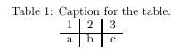

A lot of times, it is necessary to have data nicely structured in a table. LaTeX offers an environment for table creation. For this purpose we use the table and tabular as well as the center environment. The table environment merely holds our other environments and allows to add a caption to our table. The actual data is contained in the tabular environment and we center the table on the page using the center environment.
The table I use for demonstration look like this:
The according code contains ampersands & as column seperators and newline symbols \\ as row seperators. The vertical lines are passed as an argument to the tabular environment (e.g. \begin{tabular}{l|c||r} ) and the letters tell whether we want to align the content to the left (l), to the center (c) or to the right (r) for each column. Row seperators can be added with the \hline command. The \caption and \label commands can be used in the same way as for pictures.
\documentclass{article}
\begin{document}
\begin{table}[h!]
\centering
\caption{Caption for the table.}
\label{tab:table1}
\begin{tabular}{l|c||r}
1 & 2 & 3\\
\hline
a & b & c\\
\end{tabular}
\end{table}
\end{document}
There are two disadvantages of writing tables by hand as described in this tutorial. While it works for small tables
similar to the one in our example, it can take a long time to enter a large amount of data by hand. Most of the
time the data will be collected in form of a spreadsheet and we don't want to enter the data twice. Furthermore
once put into LaTeX tables, the data can not be plotted anymore and is not in a useful form in general. For this
reason, I will show how to create tables and plots directly from spreadsheets (.csv) in the advanced lessons.
But let's stick with writing tables by hand for now. The table above does not look very appealing. For this reason, we're
now going to use the booktabs package to change this pitiful situation. The table we're going to get will be much nicer than
before. Have a look at this:
The code requires just a few changes. I used the following code to get this result:
\documentclass{article}
\usepackage{booktabs}
\begin{document}
\begin{table}[h!]
\centering
\caption{Caption for the table.}
\label{tab:table1}
\begin{tabular}{ccc}
\toprule
Some & actual & content\\
\midrule
prettifies & the & content\\
as & well & as\\
using & the & booktabs package\\
\bottomrule
\end{tabular}
\end{table}
I suggest you to try out all the features of LaTeX tables yourself. There's a huge list of code examples for tables somewhere on Wikibooks, which vast amount is almost overwhelming. As I mentioned before, it's usually faster to use a tool like excel to format your content and then let the pgfplots package autogenerate a table for you.